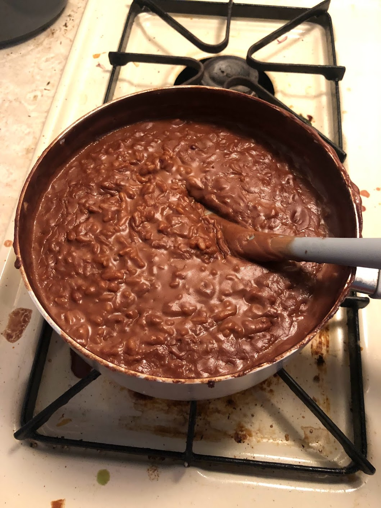

Back to Main

Description
Traditional Filipino Sweet Chocolate Rice Porrice
Ingrediants
- Water 1.5 cups
- Coconut Milk 1- 14oz can
- salt 2 tsp
- Glutinous Rice 1 cup
- Chocolate/Cocoa Powder
Steps
- Boil Water
- Add chopped chocolate into a rice until fully incorporated
- Rinse Rice>
- Add coconut milk and reduce to simmer, add spices if you want
- Cook 15-20 minutes until creamy
- Let the rice steam and continue to thicken for 10 minutes
- Eat hot and serce with a drizzle of condensed milk